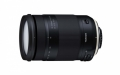

器材库 > APS画幅镜头 > 18-400/3.5-6.3 Di II VC HLD（B028）

详细规格
镜头类型
超远摄变焦镜头
发布日期
2017-06-23
焦距
18mm-400mm
等效35mm画幅焦距
28mm-620mm
最大光圈
f/3.5-6.3
最小光圈
f/22-40
视角（对角）
75°33 - 4°
镜头结构
16片/11组
非球面镜片
3片
低/超低色散镜片
3片
光圈叶片
7片
最近对焦距离
45cm
最大放大倍率
1:2.9
驱动马达
HLD
滤镜口径
72mm
镜头卡口
Canon EF, Nikon F
防抖
是
颜色
黑色
尺寸
佳能卡口：79×123.9mm尼康卡口：79×121.4mm
重量
佳能卡口：710g尼康卡口：705g
附件
花瓣型遮光罩、镜头盖
备注
防抖效果2.5档
匿名网友2018-01-17 15:024 分
操作性 4.00耐用性 4.50性价比 3.50解像力 3.50色彩还原 4.00机械结构 4.50
产品图 / 样片
B028